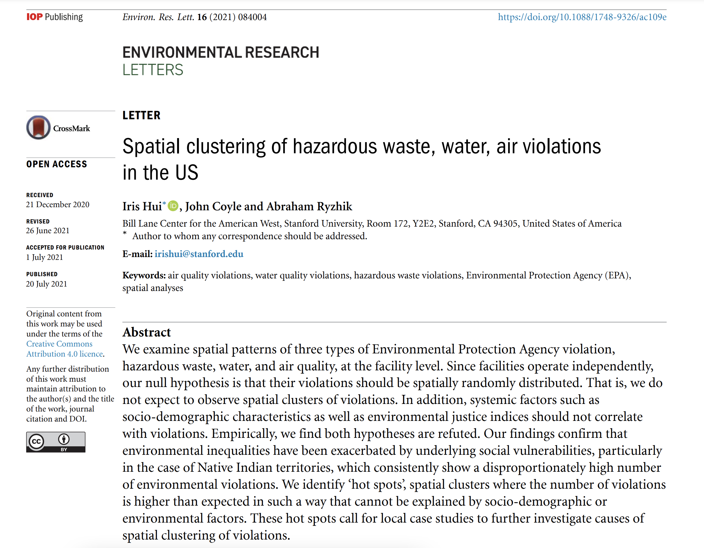

Our research into EPA violations at the national level has been publish in the Environmental Research Letters journal.
An article about our research can be found on the Bill Lane Center's website here. The paper can be found at the Bill Lane Center's website here, on the journal's website here, or by clicking the sample below.
